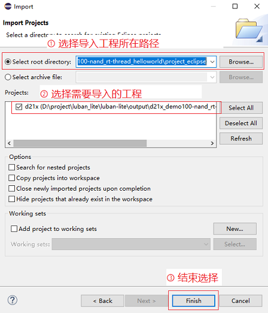
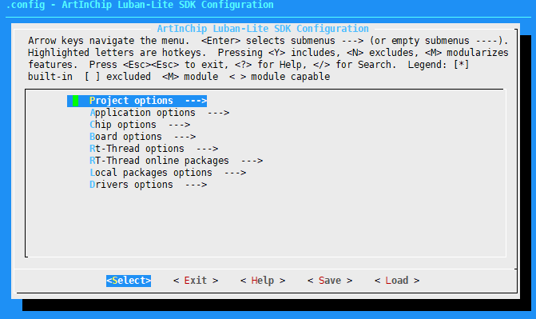
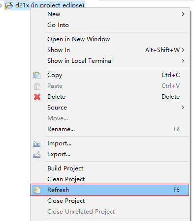

Eclipse
本节介绍了使用 Eclipse IDE 创建、编译和修改 Eclipse 工程的详细流程。
使用 Eclipse IDE 前，确保已经下载和安装 Eclipse IDE for Embedded C/C++ Developers。
Eclipse 工程编译涉及下列工程文件，两者的区别如下：
- eclipse 工程：源码文件和 Luban-Lite SDK 共享，可以使用
menuconfig 配置菜单来更改工程配置。
建议在开发阶段使用 eclipse 类型的工程。
- eclipse_sdk 工程：把所有的源码文件拷贝一份，脱离了 Luban-Lite SDK
框架，不能使用 menuconfig 配置菜单来更改工程配置。
建议在发布阶段使用 eclipse_sdk 类型的工程。
生成 Eclipse 工程
一键生成工程文件之前，确保已经在命令行环境下正确配置并且能成功编译工程文件。如果工程配置有更新，则在命令行下编译成功后再次生成 eclipse 工程文件。根据实际项目需求，生成当前工程对应的工程文件，具体流程如下所示，下列文件类型二选一：
- 生成 eclipse 工程文件：
-
进入 SDK 根目录：
cd luban-lite
- 使用下列命令生成当前工程对应的 Eclipse
工程文件：
scons --target=eclipse
-
将生成的 eclipse 工程文件存储到 luban-lite/output/xxxx/project_eclipse 目录中：
ls -a output/d21x_demo100-nand_rt-thread_helloworld/project_eclipse ./ ../ .cproject .project .settings/
-
- 生成 eclipse_sdk 工程文件：
-
进入 SDK 根目录：
cd luban-lite
-
使用下列命令生成当前工程对应的 Eclipse SDK 工程
scons --target=eclipse_sdk
-
将生成的 eclipse_sdk 工程文件存储到 luban-lite/output/xxxx/project_eclipse_sdk 目录中。
该目录拷贝了所有必要文件，可以作为一份独立的 SDK 拷贝到任何路径下进行调试。
-
导入 Eclipse 工程
- 打开下载的 Eclipse IDE for Embedded C/C++ Developers 文件。
- 在菜单栏中，选择 。
- 在 Import Projects
界面，分别选择导入工程所在路径和需要导入的工程文件。
示例如下：
 -
选择 Finish 完成导入。
编译
-
在 Project Explorer 中选择和打开成功导入的工程。
-
选中所需工程，并点击鼠标右键。
-
在鼠标右键菜单中选择 Build Project，对整个工程进行编译。注： 对于首次编译操作，需要选择 Clean Project 清理工程，避免出现环境的兼容性问题，

-
等待编译完成。
编译生成的文件存放在 luban-lite/output/xxxx/project_eclipse/Debug 目录中，示例如下：ll output/d21x_demo100-nand_rt-thread_helloworld/project_eclipse/Debug/ d21x.bin d21x.elf // 调试需要的 elf 文件 d21x.map d21x_demo100_nand_page_2k_block_128k_v1.0.0.img // 烧录需要的 img 文件
更改 Eclipse 工程配置
-
进入 Luban-Lite 根目录后，执行 scons --menuconfig。
cd luban-lite scons --menuconfig // 更改当前工程配置
 -
在 menuconfig 菜单退出时，系统会自动更新 luban-lite/output/xxxx/project_eclipse 目录下的 Eclipse 配置文件。用户在 Eclipse 工程的右键菜单中选择 Refresh 刷新即可同步配置：
